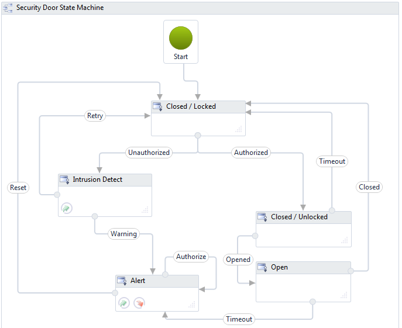
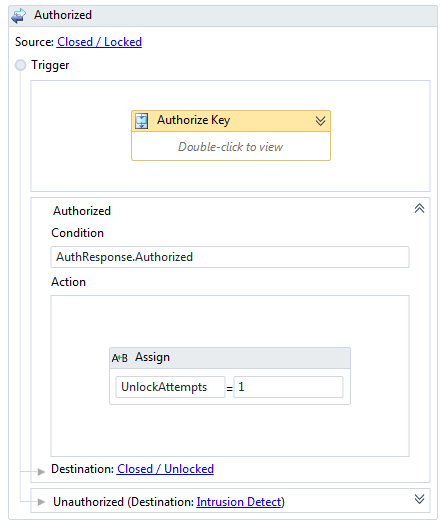

This sample application was used in the Tech-Ed North America 2011 Session Building State Machine Workflows with Windows Workflow Foundation. The sample application demonstrates a Workflow Service that is invoked from a Silverlight Application.
The State Machine tracks the state of a door by receiving messages from the door to notify it of events such as the door being opened or closed.

This sample requires
Description
When creating a Workflow Service with a State Machine there are some important tips to keep in mind.
Your initial receive activity should be contained in a transition out of the initial state.

As you can see in the Authorized transition there is a receive activity (in the AuthorizeKey sequence) that actually starts the workflow service and then transitions to the Closed / Unlocked state (if authorized) or to the Intruction Detect state (if unauthorized).
The Authorize Key operation can be used both to create a workflow or to continue a workflow which is already running. To properly configure the receive activity be sure to
For more information see